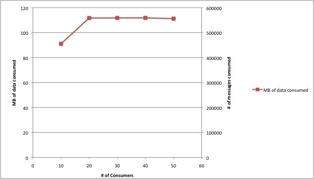

The following tests give some basic information on Kafka throughput as the number of topics, consumers and producers and overall data size varies. Since Kafka nodes are independent, these tests are run with a single producer, consumer, and broker machine. Results can be extrapolated for a larger cluster.
We run producer and consumer tests separately to isolate their performance. For the consumer these tests test cold performance, that is consuming a large uncached backlog of messages. Simultaneous production and consumption tends to help performance since the cache is hot.
We took below setting for some of the parameters:
We can push about 50MB/sec to the system. However, this number changes with the batch size. The below graphs show the relation between these two quantities.
According to our experiments, we can consume about 100M/sec from a broker and the total does not seem to change much as we increase the number of consumer threads.


We are able to max out production with only a few threads.

Based on our experiments, the number of topic has a minimal effect on the total data produced. The below graph is an experiment where we used 40 producers and varied the number of topics

The performance related code is under perf folder. To run the simulator :
../run-simulator.sh -kafkaServer=localhost -numTopic=10 -reportFile=report-html/data -time=15 -numConsumer=20 -numProducer=40 -xaxis=numTopic
It will run a simulator with 40 producer and 20 consumer threads producing/consuming from a local kafkaserver. The simulator is going to run 15 minutes and the results are going to be saved under report-html/data
and they will be plotted from there. Basically it will write MB of data consumed/produced, number of messages consumed/produced given a number of topic and report.html will plot the charts.
Other parameters include numParts, fetchSize, messageSize.
In order to test how the number of topic affects the performance the below script can be used (it is under utl-bin)
#!/bin/bash
for i in 1 10 20 30 40 50;
do
../kafka-server.sh server.properties 2>&1 >kafka.out&
sleep 60
../run-simulator.sh -kafkaServer=localhost -numTopic=$i -reportFile=report-html/data -time=15 -numConsumer=20 -numProducer=40 -xaxis=numTopic
../stop-server.sh
rm -rf /tmp/kafka-logs
sleep 300
done
The charts similar to above graphs can be plotted with report.html automatically.